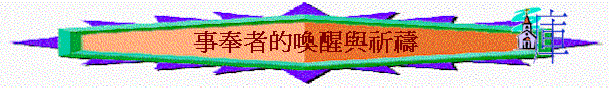

[ 聚會資源 ]
事奉者的喚醒與祈禱
一. 愛的喚醒
「耶和華說：「我曾愛你們。」你們卻說：「你在何事上愛我們呢？」耶和華說：「以掃不是雅各的哥哥嗎？我卻愛雅各，」瑪1:2
＊ 醒 省察：
〜我近來對父神的愛是否很有感覺，很有感動？
∼還是比以前退步了，冷淡了呢？
〜我愛祂的心是否火熱？ 還是不冷不熱呢？
二.擺上的喚醒
「你們將污穢的食物獻在我的壇上，且說：『我們在何事上污穢你呢？』因你們說，耶和華的桌子是可藐視的。你們將瞎眼的獻為祭物，這不為惡嗎？將瘸腿的、有病的獻上，這不為惡嗎？你獻給你的省長，他豈喜悅你，豈能看你的情面嗎？這是萬軍之耶和華說的。」瑪1:7-8
省察：
〜我是否將我生活、生命中最好的獻給我神？
∼還是將較次等、多餘的獻給祂？
∼在生活上，所擺上的是否聖潔？
祈禱．．．．．．
三.關係的喚醒
「我們豈不都是一位父嗎？豈不是一位神所造的嗎？我們各人怎麼以詭詐待弟兄，背棄了神與我們列祖所立的約呢？」瑪2:10
「你們又行了一件這樣的事，使前妻歎息哭泣的眼淚遮蓋耶和華的壇，以致耶和華不再看顧那供物，也不樂意從你們手中收納。」瑪2:13
省察：
〜我與教會的弟兄／姊妹關係如何？
∼有否對他們不好，虧欠他們呢？
〜我對我的配偶如何？ 有否令他/她擔憂、傷心呢？
祈禱．．．．．．
四.責任的喚醒
「人豈可奪取神之物呢？你們竟奪取我的供物。你們卻說：『我們在何事上奪取你的供物呢？』就是你們在當納的十分之一和當獻的供物上。因你們通國的人都奪取我的供物，咒詛就臨到你們身上。萬軍之耶和華說：你們要將當納的十分之一全然送入倉庫，使我家有糧，以此試試我，是否為你們敞開天上的窗戶，傾福與你們，甚至無處可容。」瑪3:8-10
省察：
〜我對神的家有幾多承擔？
∼有沒有盡當盡的責任？還是逐漸疏離了？
〜在奉獻的功課學習如何？ 有否奪取神的供物？
祈禱．．．．．．
五.事奉的喚醒
「耶和華說：「你們用話頂撞我，你們還說：『我們用什麼話頂撞了你呢？』你們說：『事奉神是徒然的，遵守神所吩咐的，在萬軍之耶和華面前苦苦齋戒，有什麼益處呢？」瑪3:13-14
省察：
〜我現在對「事奉」有如何看法？
∼是否感到非常開心、榮耀，有價值？
〜還是慢慢少了對「事奉」的熱誠，渴慕及榮耀的感覺？
祈禱．．．．．．
[ 聚會資源 ]